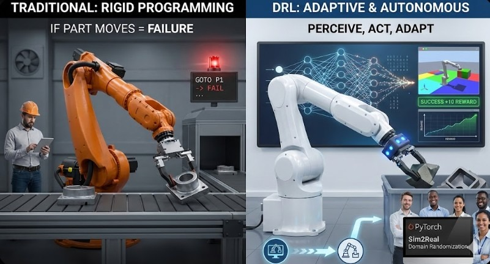

Industrial robots have traditionally relied on rigid, coordinate-based programming. If a part is moved slightly, or if the lighting changes, the robot fails. In this post, I discuss my recent experiments and theoretical work using Deep Reinforcement Learning (DRL) to allow 6-axis arms to adapt to variable environments in real-time.
The Problem with Traditional Polling
In standard PLC-driven automation, robots execute a fixed `GOTO` logic.
Move to P1 -> Grip -> Move to P2 -> Release.
This works perfectly for high-volume, low-mix manufacturing. However, in "Industry 4.0"
scenarios where customization is key, we need agents that can *perceive* and *act*.
Implementing DRL Agents
Using PyTorch and simulation environments like Gazebo or PyBullet, we can train agents using algorithms like PPO (Proximal Policy Optimization) or SAC (Soft Actor-Critic). The "Reward Function" is key:
- +10 Reward: Successfully grasping the object.
- -1 Reward: Each time step (encourages speed).
- -100 Reward: Collision.
Real World Application
The gap between Simulation and Reality ("Sim2Real") remains the biggest hurdle. During my time at Kowa Skymech, we explored Domain Randomization—varying textures, lighting, and physics parameters in the sim so the real world looks like just another variation to the model.
Conclusion
While still maturing, DRL offers a path toward truly autonomous manufacturing cells that require minimal reprogramming for new tasks. It is the future of flexible automation.
About the Author
Nay Linn Aung is a Senior Technical Product Owner specializing in the convergence of OT and IT.